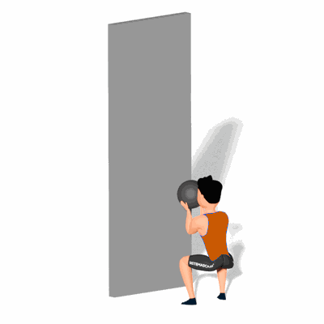

Wall Ball

Esse exercício aumenta sua frequência cardíaca, sendo uma ótima maneira de melhorar sua aptidão cardiorrespiratória e queimar calorias. Também ajuda a aumentar seu poder de explosão no movimento, que é um componente necessário em muitas atividades atléticas. Além disso, executar esse movimento pode ajustar sua coordenação olho/mão e melhorar suas habilidades de arremesso e precisão.
Ficha Técnica
Tipo: CrossFit
Grupo Muscular: Corpo
Aparelho: Nenhum
Músculos: Nenhum
Como realizar
- De frente com a parede e um pouco distante dela;
- Pegue a bola, coloque a bola à altura do peito com as mãos posicionadas ligeiramente de lado na bola, as mãos devem estar paralelas;
- Realize o agachamento completo, em seguida, execute um movimento o mais explosivo que conseguir para cima usando toda a energia do trem inferior (pernas ancas), transpondo-a para os braços para elevar a bola até ao alvo;
- Depois que a bola atingir o alvo e estiver voltando, segure a bola iniciando o agachamento novamente e repetindo os movimentos.
 RC STORE
RC STORE